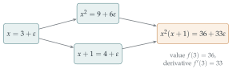

STEP II 1992, Question 4
Read the question before you go on. It is in the STEP Support Programme’s question database: step.maths.org/questions/92-s2-q4
The hook
What is differentiation? At school it is defined by a limit, \(\lim_{h \to 0}\frac{f(x+h) - f(x)}{h}\), and then you learn rules: the derivative of a sum is the sum of the derivatives, the product rule, and so on. This question turns that upside down. Forget limits entirely. Suppose all you know about an operation is that it obeys the sum rule, the product rule and the rule for constants, and that it sends \(x\) to \(1\). Then, the question shows, it must be differentiation, at least on polynomials.
This is the algebraist’s view of calculus: an operation is characterised by the rules it obeys, not by a formula. Operations obeying the product rule are called derivations, and they turn up throughout algebra, geometry and physics. Surprisingly, the same idea is at work inside the software that trains modern machine-learning systems.
Before you start
Rule (i) is the product rule. How could the product rule tell you anything about a constant? (Think of a constant as a product.)
The number \(1\) equals \(1 \times 1\). Applying the product rule to \(1 \times 1\) relates \(\lozenge 1\) to itself, and that will force it to be zero. In general, the trick with axioms like these is to apply them to cleverly chosen simple inputs.
Working it through
Stage 1 Constants
Apply rule (i) with \(\mathrm{f} = \mathrm{g} = 1\). Then use rule (iv) for any other constant.
\(\lozenge 1 = \lozenge(1 \cdot 1) = 1 \cdot \lozenge 1 + 1 \cdot \lozenge 1 = 2\lozenge 1\), so \(\lozenge 1 = 0\). For any constant \(\lambda\), rule (iv) gives \(\lozenge\lambda = \lozenge(\lambda \cdot 1) = \lambda\lozenge 1 = 0\).■
Stage 2 Powers
\(\lozenge x^2 = \lozenge(x \cdot x) = x\lozenge x + x\lozenge x = 2x\), using rule (iii). Then \[\lozenge x^3 = \lozenge(x^2 \cdot x) = x\lozenge x^2 + x^2\lozenge x = x \cdot 2x + x^2 = 3x^2.\]
Prove by induction that \(\lozenge x^n = nx^{n-1}\) for every positive integer \(n\).
The case \(n = 1\) is rule (iii). If \(\lozenge x^n = nx^{n-1}\), then \[\lozenge x^{n+1} = \lozenge(x^n \cdot x) = x\lozenge x^n + x^n\lozenge x = x \cdot nx^{n-1} + x^n = (n + 1)x^n. \qed\]
Stage 3 All polynomials
A general polynomial is \(\mathrm{h}(x) = a_0 + a_1x + \cdots + a_mx^m\). By rule (ii) (applied repeatedly) and rule (iv), \[\begin{aligned} \lozenge\mathrm{h}(x) &= \lozenge a_0 + a_1\lozenge x + a_2\lozenge x^2 + \cdots + a_m\lozenge x^m \\ &= a_1 + 2a_2x + \cdots + ma_mx^{m-1} = \mathrm{h}'(x). \qed \end{aligned}\]
Looking back
Axioms determine the operation. Four rules, with no mention of limits, pinned down \(\lozenge\) completely on polynomials.
Generators. Every polynomial is built from constants and \(x\) using addition and multiplication. Knowing what \(\lozenge\) does to the building blocks, and how it interacts with the building operations, determines it everywhere.
Induction along the construction. The proof followed the way polynomials are built: powers by repeated multiplication, then sums.
What’s really going on
An operation \(D\) on an algebraic system that is additive and satisfies the product rule \(D(fg) = fD(g) + gD(f)\) is called a derivation. The question shows that on polynomials, a derivation that kills constants is completely determined by \(D(x)\): in fact \(D(h) = h'(x)\,D(x)\), so the only freedom is the choice of the polynomial \(D(x)\). Rule (iii) fixes \(D(x) = 1\). Derivations appear across mathematics: in geometry, a vector field on a surface can be defined as a derivation on the functions on that surface (it differentiates functions in the direction of the field); in algebra, derivations of a structure measure its “infinitesimal symmetries”; in physics, the commutator \([A, B] = AB - BA\) of quantum mechanics is a derivation in each argument.
Calculus without limits
The algebraic derivative works in settings where limits make no sense at all. Over a finite field, such as arithmetic modulo a prime \(p\), there are no limits, but the formal derivative of a polynomial is defined by the same rules and still detects repeated roots: a polynomial \(f\) has a repeated root exactly when \(f\) and \(f'\) have a common factor. That is how one shows, for example, that \(x^n - 1\) has no repeated roots when \(p \nmid n\), a fact needed to define the cyclotomic polynomials of Section 6.1 over finite fields. The same idea is used in coding theory and cryptography.
Automatic differentiation
Here is a modern application. Invent a number \(\varepsilon\) with \(\varepsilon^2 = 0\) but \(\varepsilon \neq 0\), and do arithmetic with dual numbers \(a + b\varepsilon\). Then \((a + b\varepsilon)(c + d\varepsilon) = ac + (ad + bc)\varepsilon\): the \(\varepsilon\)-part follows exactly the product rule. So for any polynomial, \[f(x + \varepsilon) = f(x) + f'(x)\,\varepsilon,\] and evaluating \(f\) at the dual number \(x + \varepsilon\) computes the value and the derivative at the same time, exactly, with no limits and no rounding error from small differences (Figure 6.5.1). This is called forward-mode automatic differentiation. Its cousin, reverse mode, is the algorithm (backpropagation) used to train neural networks with billions of parameters: every time such a system learns, it is applying the product and chain rules, as derivations, step by step.

The thinking skill
Describe an operation by the rules it obeys, then show that the rules determine it uniquely.
This is the axiomatic method, central to university algebra. Its power is that anything you prove from the axioms applies to every operation that satisfies them, whether it is differentiation of polynomials, of functions on a surface, or something not yet invented.
Try this next
A different derivation. Suppose \(\lozenge\) satisfies rules (i), (ii) and (iv), but \(\lozenge x = x\) instead of \(1\). Show that \(\lozenge\mathrm{h}(x) = x\,\mathrm{h}'(x)\). What does \(\lozenge\) do to \(x^n\)?
The quotient rule. Extend \(\lozenge\) to rational functions \(\mathrm{f}/\mathrm{g}\), assuming rule (i) still holds. By applying rule (i) to \(\mathrm{g} \cdot \frac{\mathrm{f}}{\mathrm{g}} = \mathrm{f}\), derive the quotient rule.
Repeated roots. Show that if \((x - a)^2\) divides a polynomial \(\mathrm{f}\), then \(x - a\) divides \(\mathrm{f}'\). Use this to show that \(x^n - 1\) has no repeated roots.
Dual numbers. Use dual numbers to compute \(f(2)\) and \(f'(2)\) for \(f(x) = (x^2 + 1)^3\), and check with the chain rule.
Further reading
Peter Cameron, Introduction to Algebra (Oxford University Press). Rings, polynomials and fields at first-year level, with the formal derivative.
Andreas Griewank & Andrea Walther, Evaluating Derivatives (SIAM). The standard reference on automatic differentiation. Advanced.
Michael Nielsen, Neural Networks and Deep Learning (free online). Chapter 2 explains backpropagation clearly.